Action bias
The tendency for someone to act when faced with a problem even when inaction would be more effective, or to act when no evident problem exists
DecisionBaseline

Cognitive Biases
A practical cognitive-bias site with clear definitions, learning paths, assessments, self-audits, and debiasing tools.
Pattern
Judgment is pulled by the wrong starting point, default frame, or prior expectation.
This is the cross-cutting layer that helps the site feel more like a real reference and less like a flat list.
The tendency for someone to act when faced with a problem even when inaction would be more effective, or to act when no evident problem exists

The tendency to solve problems through addition, even when subtraction is a better approach

The tendency for the first salient number, frame, or option to pull later estimates toward itself even when it is arbitrary or weakly relevant.

Where candidates who are listed first often receive a small but statistically significant increase in votes compared to those listed in lower positions

The tendency to underweight general prevalence information when vivid case-specific details are available.

Bizarre material is better remembered than common material
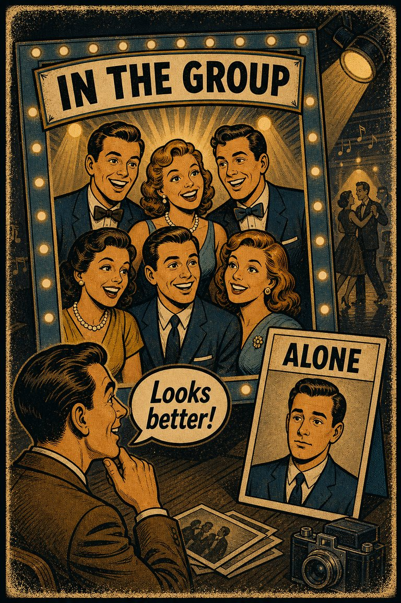
The tendency for people to appear more attractive in a group than in isolation
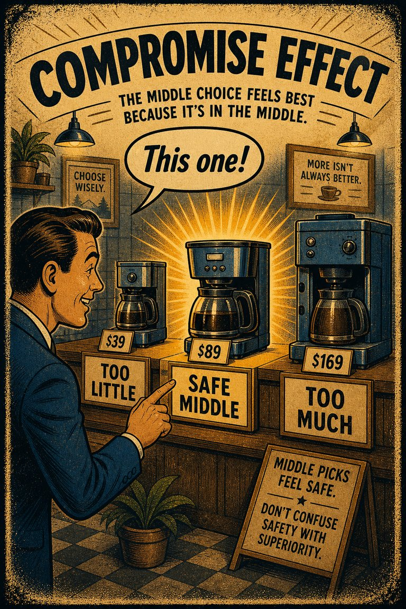
Choices affected if presented as extreme or average
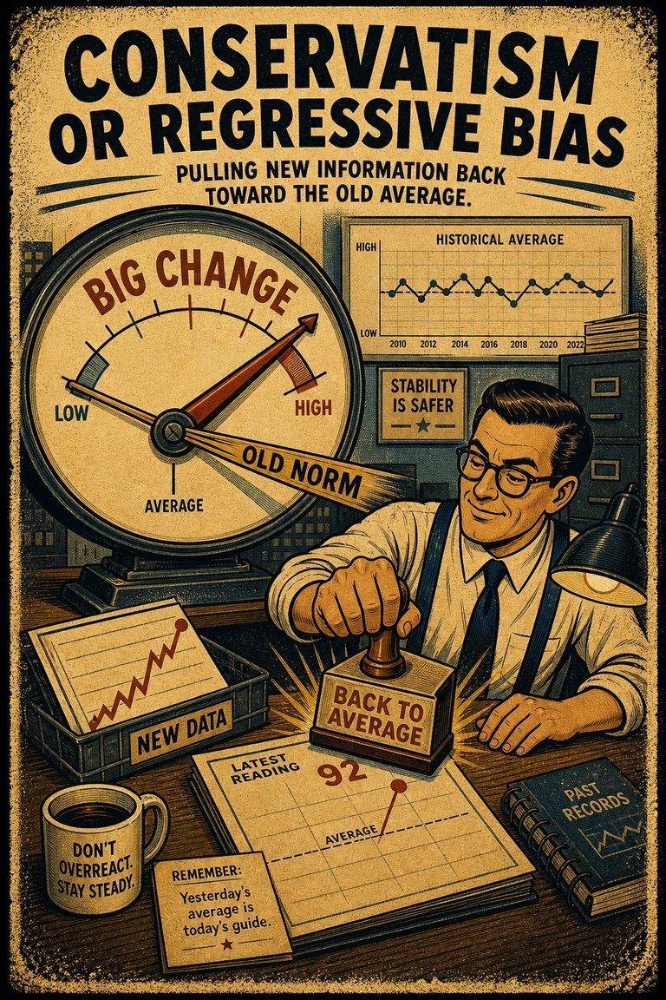
Tendency to remember high values and high likelihoods/probabilities/frequencies as lower than they actually were and low ones as higher than they actually were. Based on the evidence, memories are not extreme enough
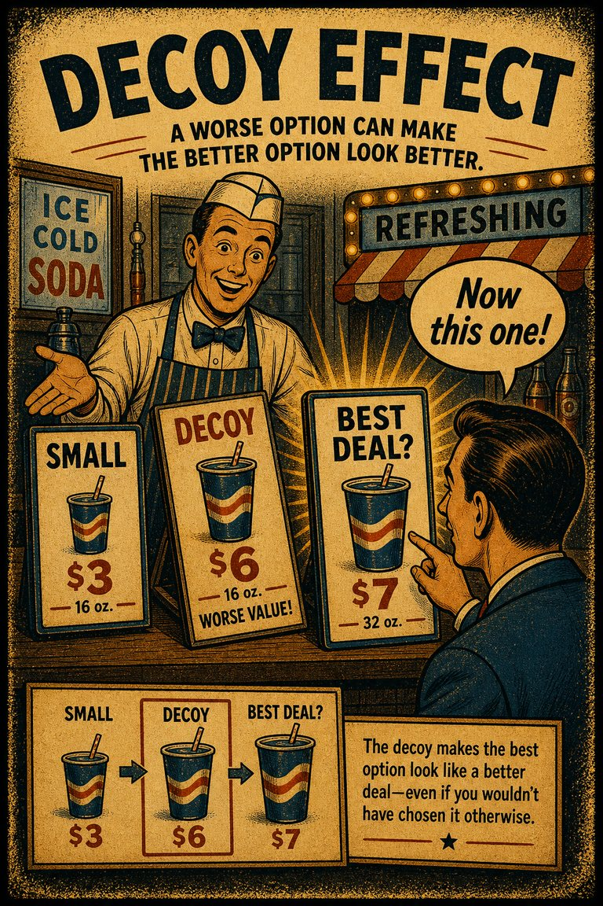
Where preferences for either option A or B change in favor of option B when option C is presented, which is completely dominated by option B (inferior in all respects) and partially dominated by option A
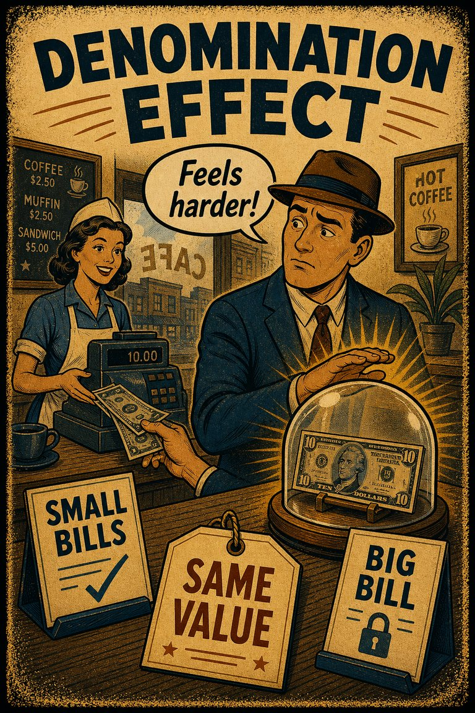
The tendency to spend more money when it is denominated in small amounts (e.g., coins) rather than large amounts (e.g., bills)
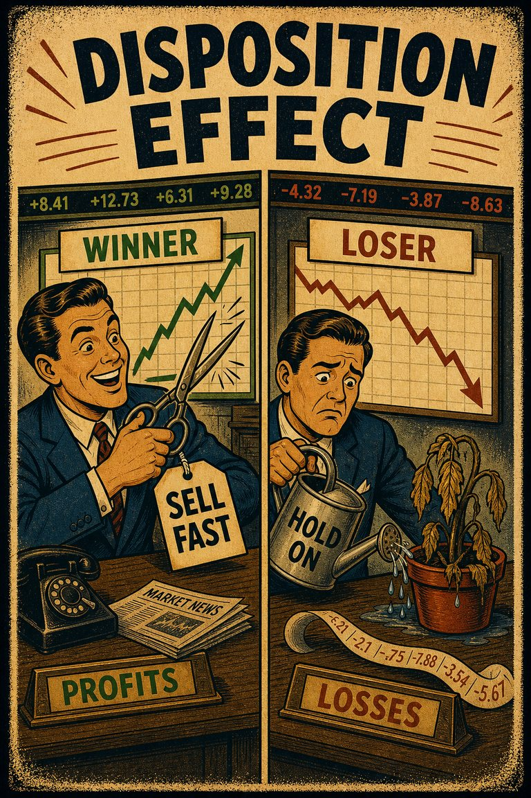
The tendency to sell an asset that has accumulated in value and resist selling an asset that has declined in value
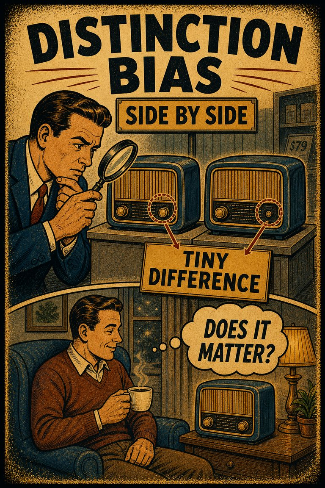
The tendency to view two options as more dissimilar when evaluating them simultaneously than when evaluating them separately

The tendency for low skill or shallow understanding to produce overestimation of one's own competence, while higher-skill people may underestimate how unusual their competence really is.

The frequency illusion is that once something has been noticed then every instance of that thing is noticed, leading to the belief it has a high frequency of occurrence (a form of selection bias ). The Baader–Meinhof phenomenon is the illusion where something that has recently come to one's attention suddenly seems to appear with improbable frequency shortly afterwards. It was named after an incidence of frequency illusion in which the Baader–Meinhof Group was mentioned

The tendency to think that future probabilities are altered by past events, when in reality they are unchanged. The fallacy arises from an erroneous conceptualization of the law of large numbers . For example, "I've flipped heads with this coin five times consecutively, so the chance of tails coming out on the sixth flip is much greater than heads."

The tendency to overestimate one's ability to accomplish hard tasks, and underestimate one's ability to accomplish easy tasks
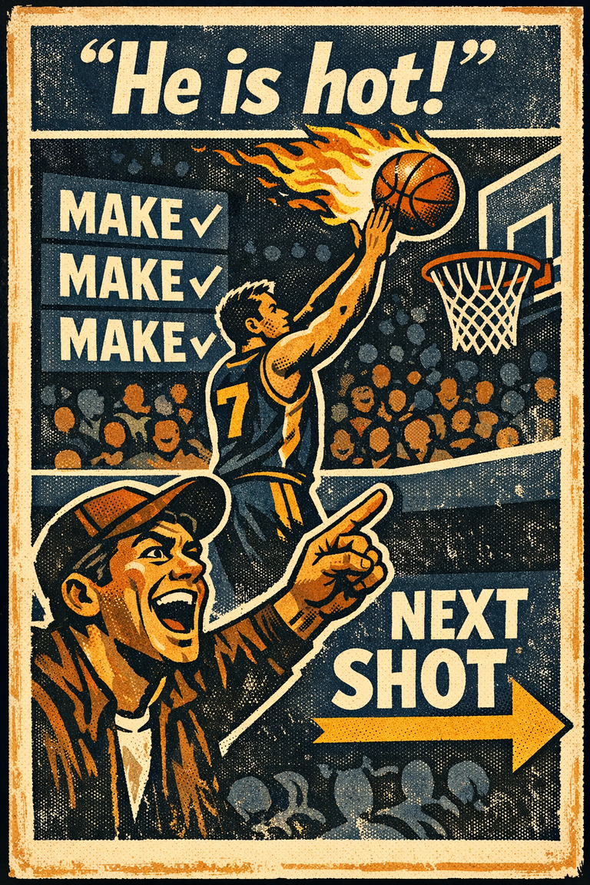
The belief that a person who has experienced success with a random event has a greater chance of further success in additional attempts
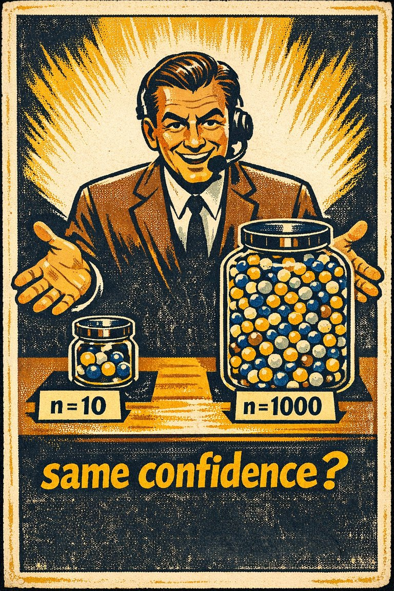
The tendency to under-expect variation in small samples
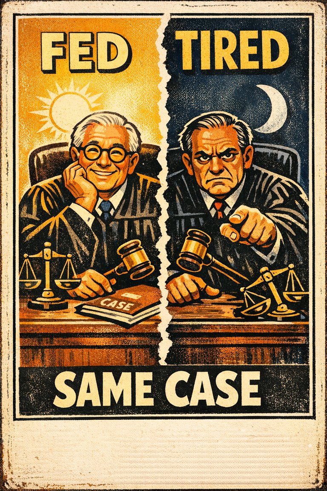
(As for example, in parole judges who are more lenient when fed and rested.)
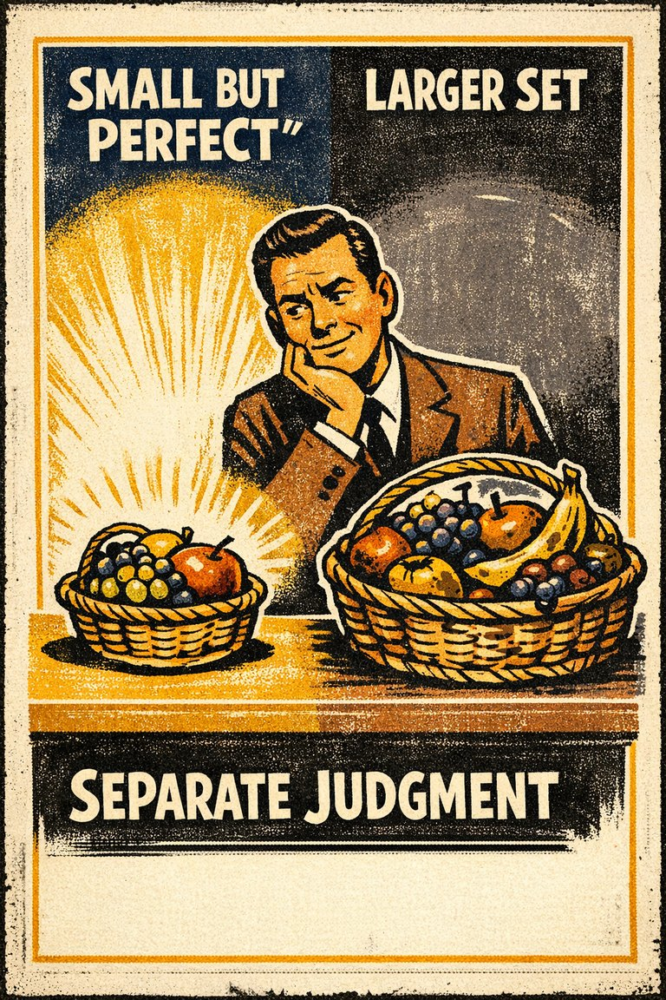
The tendency to prefer a smaller set to a larger set judged separately, but not jointly

A smaller percentage of items are remembered in a longer list, but as the length of the list increases, the absolute number of items remembered increases as well
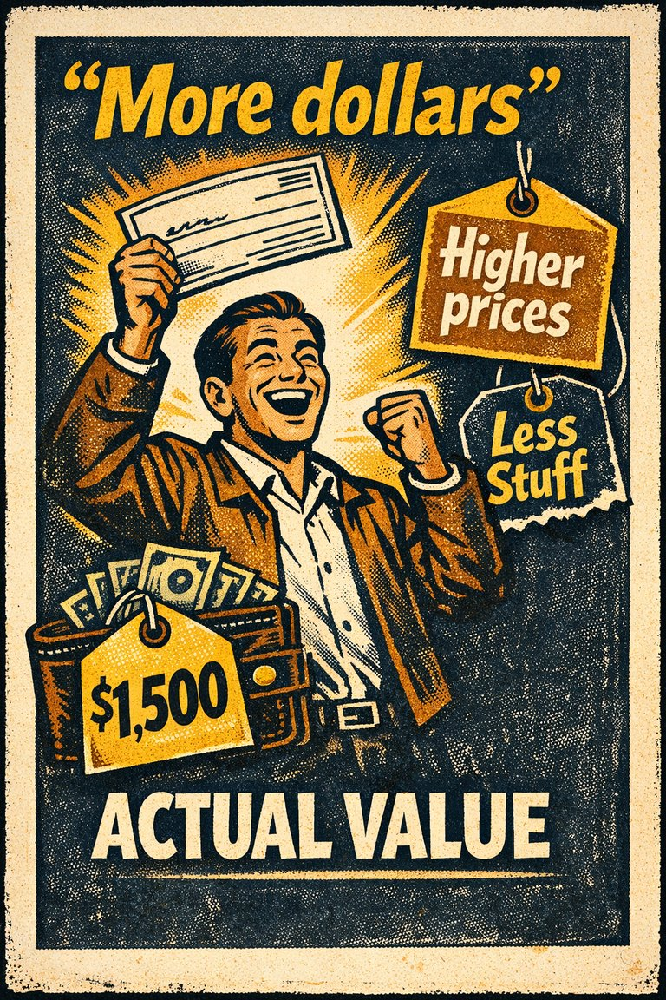
The tendency to concentrate on the nominal value (face value) of money rather than its value in terms of purchasing power

The tendency to give bad news, threats, criticism, and losses more psychological weight than equally sized positives.

The tendency to assume that things will keep functioning more or less normally, which leads people to underprepare for unprecedented or fast-moving disruption.
Choices affected by dominant but unavailable options
Where an item at the beginning of a list is more easily recalled. A form of serial position effect . See also recency effect and suffix effect
The tendency to overestimate how much your future preferences, values, and reactions will resemble whatever you feel strongly right now.
A form of serial position effect where an item at the end of a list is easier to recall. This can be disrupted by the suffix effect . See also primacy effect
For example, being willing to pay as much to save 2,000 children or 20,000 children
That items near the end of a sequence are the easiest to recall, followed by the items at the beginning of a sequence; items in the middle are the least likely to be remembered. See also recency effect, primacy effect and suffix effect
The tendency to estimate that the likelihood of a remembered event is less than the sum of its (more than two) mutually exclusive components
Judgement that arises when targets of differentiating judgement become subject to effects of regression that are not equivalent
The standard suggested amount of consumption (e.g., food serving size) is perceived to be appropriate, and a person would consume it all even if it is too much for this particular person
That an item that sticks out is more likely to be remembered than other items
Difficulty in perceiving and comparing small differences in large quantities